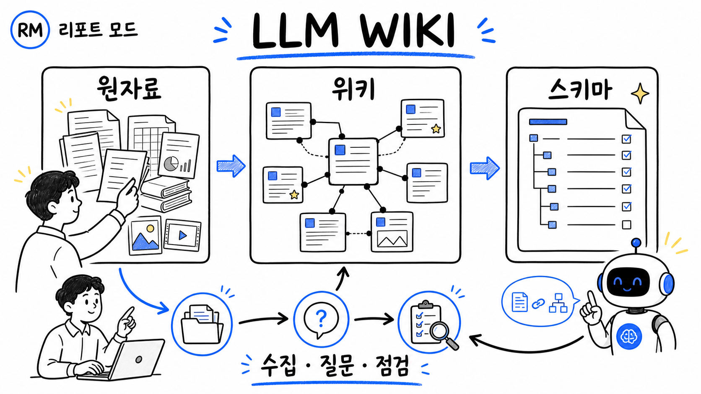

한 문장 판단: RAG의 대체품보다 ‘지식 컴파일 계층’에 가깝습니다
핵심은 특정 앱이나 제품이 아니라, 원자료를 보존하면서 LLM이 읽기 쉬운 중간 지식 구조를 계속 유지하는 운영 패턴입니다.
무엇인가
LLM Wiki는 Andrej Karpathy가 2026년 4월 4일 공개한 아이디어 문서입니다. LLM 에이전트가 원자료를 읽고, 요약·개체·개념·비교 페이지를 Markdown으로 만들며, 새 자료가 들어올 때 기존 페이지와 교차 링크·모순·종합을 갱신하도록 제안합니다. [S1][S2]
그래서 결과물은 한 번 쓰고 사라지는 채팅 답변이 아니라 지속적이고 누적되는 지식 자산입니다. 좋은 질문에서 나온 비교나 분석도 다시 위키 페이지로 저장해 다음 질문의 출발점으로 삼습니다.
사람은 믿을 자료를 고르고, 탐구 방향과 질문을 정하고, 변경 결과를 검수합니다. LLM은 요약·분류·교차 링크·파일 정리·일관성 점검을 맡습니다. Karpathy의 표현으로는 “Obsidian은 IDE, LLM은 프로그래머, 위키는 코드베이스”입니다. [S1]
구조와 흐름을 분해하면 단순합니다
원문은 특정 폴더 구조를 강제하지 않습니다. 다만 세 계층과 세 작업은 분명히 구분합니다.
| 계층 | 소유·역할 | 핵심 규칙 | 예시 |
|---|---|---|---|
| 1. 원자료 | 사람이 선별한 진실의 원천 | LLM이 읽되 수정하지 않는 불변 자료 | 논문, 기사, 회의록, 이미지, 데이터 |
| 2. 위키 | LLM이 만들고 갱신하는 Markdown | 요약·개체·개념·비교·종합을 연결 | 기업 페이지, 개념 설명, 비교표, 질의 결과 |
| 3. 스키마 | 사람과 LLM이 함께 다듬는 운영 규칙 | 구조·명명·출처·갱신·검수 절차를 고정 | AGENTS.md, CLAUDE.md, SCHEMA.md |
| 작업 | 무엇을 하나 | 완료 조건 | 사람 검수 지점 |
|---|---|---|---|
| Ingest · 수집 | 새 원자료를 읽고 기존 페이지에 통합 | 요약·색인·관련 페이지·로그가 함께 갱신됨 | 강조점, 잘못된 합성, 누락 출처 |
| Query · 질문 | 관련 위키 페이지를 찾아 근거와 함께 종합 | 답변이 근거 페이지로 추적되고, 가치 있으면 다시 저장됨 | 결론과 원자료의 일치, 반대 근거 |
| Lint · 점검 | 모순·오래된 주장·고립 페이지·끊긴 링크·자료 공백 탐지 | 문제 목록과 수정·추가 조사 항목이 남음 | 어떤 주장을 폐기·보류할지 |
누구에게 맞고, 어떻게 시작할까
지식이 여러 주와 여러 자료에 걸쳐 누적될 때 가치가 큽니다. 한 번 묻고 끝나는 단순 검색에는 과할 수 있습니다.
가장 작은 유용한 시험판
- 한 주제만 고릅니다. 예: 특정 기술, 한 권의 책, 경쟁사 한 분야.
- 세 폴더와 두 파일로 시작합니다.
raw/,pages/,queries/, 그리고index.md,log.md를 둡니다. 운영 규칙은SCHEMA.md에 적습니다. - 자료 5개를 하나씩 수집합니다. 매번 생성·수정된 페이지와 원자료 연결을 사람이 확인합니다.
- 교차 문서 질문 3개를 던집니다. 좋은 종합은
queries/에 다시 저장합니다. - 주말에 점검합니다. 끊긴 링크, 고립 페이지, 출처 없는 주장, 모순, 중복 페이지를 확인합니다.
계속할 기준: 두 번째 질문부터 답변의 근거 찾기와 종합 시간이 줄고, 새 자료가 기존 결론을 어디서 바꾸는지 추적된다면 확대할 가치가 있습니다. 그렇지 않다면 폴더·스키마를 단순화해야 합니다.
RAG와 무엇이 다른가
둘은 경쟁 제품명이 아니라 지식을 준비하는 서로 다른 시점과 계층입니다.
| 비교축 | 질문 시점 검색 중심 RAG | LLM Wiki 패턴 | 현실적인 결합 |
|---|---|---|---|
| 주요 처리 시점 | 질문할 때 관련 청크를 검색해 생성 문맥에 넣음 | 자료가 들어올 때 구조화·연결·모순 표시를 미리 갱신 | 위키를 먼저 검색하고 부족하면 원자료 RAG로 내려감 |
| 누적 산출물 | 기본형에서는 답변이 세션에 머물 수 있음 | 요약·비교·질문 결과가 파일로 남아 재사용됨 | 검증된 답변만 위키로 승격 |
| 출처와 수정 | 검색된 원문 청크를 직접 인용하기 쉬움 | 중간 요약이 오래되거나 잘못 굳어질 위험 | 위키 문장마다 원자료 경로와 날짜를 보존 |
| 확장성 | 대규모 코퍼스 검색에 성숙한 색인 활용 | 원문은 중간 규모에서 index.md가 잘 작동한다고 제안 | 규모가 커지면 BM25·벡터·재순위 검색을 추가 |
Karpathy의 “RAG는 매번 다시 발견한다”는 설명은 문제의식을 선명하게 만드는 비교입니다. RAG 자체는 검색 가능한 비모수 메모리와 생성 모델을 결합한 계열이며, 지속형 요약·캐시·메모리·지식 그래프를 함께 쓰는 시스템도 만들 수 있습니다. 따라서 LLM Wiki는 RAG를 없애기보다 검증된 지식을 미리 컴파일해 두는 계층으로 보는 편이 정확합니다. [S3]
index.md와 log.md가 중요한 이유
하나는 현재 지식의 지도이고, 다른 하나는 변화의 시간축입니다.
index.md · 콘텐츠 지도
모든 페이지의 링크와 한 줄 요약을 범주별로 모읍니다. 질문할 때 먼저 읽고 관련 페이지로 내려갑니다. 원문은 약 100개 원자료·수백 페이지의 중간 규모에서 이 방식이 놀랍도록 잘 작동한다고 경험적으로 설명하지만, 정식 벤치마크 수치는 아닙니다. [S1]
log.md · 변경 기록
수집·질문·점검을 날짜순으로 남깁니다. 최근 작업을 빠르게 복원하고, 무엇이 언제 바뀌었는지 추적합니다. 일관된 제목 형식을 쓰면 단순한 명령줄 도구로도 읽을 수 있습니다.
적합한 경우와 부적합한 경우
문서 수보다 ‘연결과 갱신이 반복되는가’가 판단 기준입니다.
| 상황 | 적합도 | 이유 | 권장 방식 |
|---|---|---|---|
| 몇 달짜리 연구·논문 읽기 | 높음 | 주장·개념·반대 근거가 계속 누적됨 | 개념·인물·비교 페이지와 출처 추적 |
| 책·강의·취미 심층 탐구 | 높음 | 장·주제·등장요소의 연결이 가치 | 장별 원자료와 주제별 종합 분리 |
| 팀의 회의·고객·프로젝트 지식 | 조건부 | 유용하지만 권한·개인정보·승인·동시 편집 필요 | 접근 통제와 사람 승인 후 위키 반영 |
| 일회성 사실 확인 | 낮음 | 유지 비용이 재사용 가치보다 큼 | 검색·RAG·일반 메모로 충분 |
| 초대형·고속 변경 데이터 | 조건부 | 전체 재정합성과 검색 비용이 커짐 | DB·검색 색인·자동 검증과 결합 |
반대 논리와 실패 가능성
유지 비용이 ‘거의 0’이라는 원문의 낙관은 운영 설계와 검수 품질에 따라 달라집니다.
- 오류가 누적될 수 있습니다. 잘못된 요약이 여러 페이지에 복제되면 이후 답변의 출발점도 오염됩니다. 원자료 불변 보존과 문장 단위 출처가 필요합니다.
- 과도한 재작성은 신뢰를 떨어뜨립니다. 한 자료가 10~15개 페이지를 건드릴 수 있다는 원문 사례는 강점인 동시에 큰 변경 면적입니다. diff 검수와 변경 상한이 필요합니다.
- 스키마가 너무 약하면 파일 더미가 됩니다. 페이지 생성 기준, 명명, 태그, 출처, 모순 처리와 보관 규칙을 먼저 정해야 합니다.
- 스키마가 너무 강하면 탐구를 막습니다. 작은 파일럿에서 규칙을 함께 진화시키고, 자동화는 반복 문제가 확인된 뒤 추가하는 편이 낫습니다.
- 민감 자료에는 별도 경계가 필요합니다. 건강·심리·회의·고객 자료는 저장 위치, 모델 전송, 계정 권한, 보존 기간과 삭제 절차를 사람이 정해야 합니다.
세 가지 운영 시나리오
도입 성패는 모델 성능보다 사람 검수와 운영 규칙이 얼마나 닫힌 루프를 이루는지에 좌우됩니다.
| 시나리오 | 운영 모습 | 예상 결과 | 대응 |
|---|---|---|---|
| 낙관 | 출처·diff·점검이 습관화되고 고가치 질문을 다시 저장 | 질문할수록 연결과 종합이 빨라지는 누적 자산 | 주제와 사용자를 점진적으로 확대 |
| 기준 | 유용하지만 일부 페이지가 낡고 중복됨 | 검색 보조와 수동 정리가 함께 필요 | 주간 lint, 월간 보관, 핵심 페이지만 엄격 관리 |
| 보수 | 대량 자동 수집, 출처 없는 요약, 검수 없는 광범위 수정 | 그럴듯하지만 신뢰하기 어려운 파일 더미 | 자동 수집 중단, 원자료로 회귀, 중요 페이지 재검증 |
한계와 최종 체크리스트
원문 자체도 이것이 구체 구현이 아닌 추상적 패턴이라고 명시합니다.
- 정확한 폴더, 페이지 형식, 도구와 자동화 수준은 도메인·자료·모델에 맞춰 정해야 합니다.
- ‘약 100개 원자료·수백 페이지’, ‘한 자료가 10~15개 페이지를 수정’은 원문의 경험적 예시이며 보편 성능 보장이 아닙니다.
- RAG 비교는 기본적인 질문 시점 검색 흐름을 대상으로 한 개념 비교입니다. 모든 현대 RAG·메모리 시스템을 포괄하지 않습니다.
- LLM이 모순을 표시해도 사실 판정이 자동으로 끝나는 것은 아닙니다. 중요한 결론은 원자료와 변경 내역을 사용자가 검수해야 합니다.
도입 전 네 가지 질문
- 원자료가 수정 불가 상태로 보존되는가?
- 모든 핵심 주장에 출처·날짜를 추적할 수 있는가?
- 한 번의 수집이 건드릴 수 있는 파일 수와 승인 기준이 정해졌는가?
- 점검·백업·보안·폐기 책임자가 분명한가?